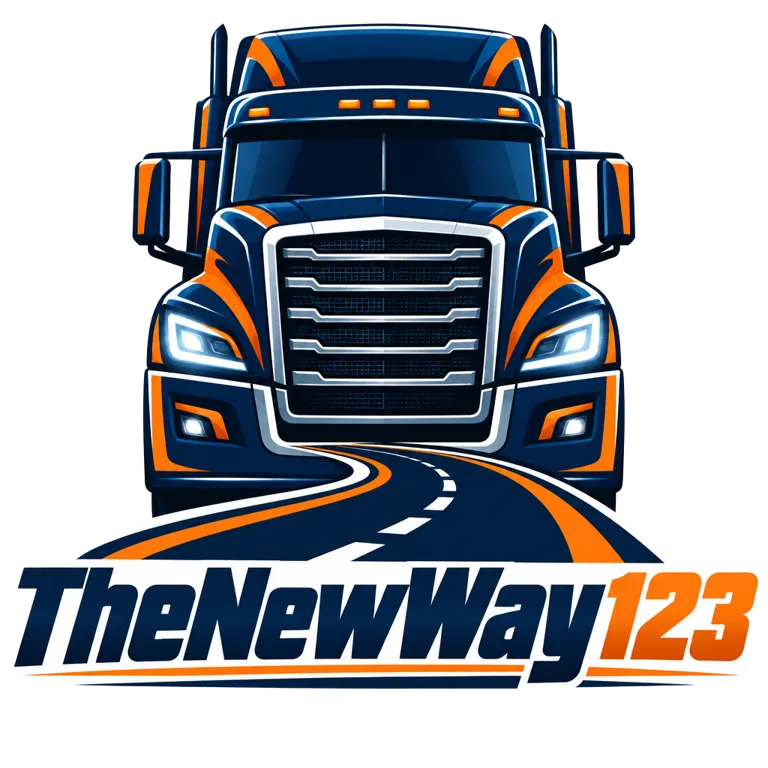

Welcome to TheNewWay123!
Our VTC is very strict but we will have fun together! You can also join our convoys!
Everyone should respect other drivers and follow the TruckersMP rules. There are simple: No collisions, no Reckless driving and other TruckersMP rules. If you break the rules you will be in the Black list. Every week you need to do jobs. Every month you need to have 1500 kilometers. You can join our staff. You will strat like a member and you can also be admin if you do the questions right. If you do them, there will be another question which are a little hard . We do convoys in Euro Truck Simulator 2. The first convoy is on 28.10.2026 and i think that it will be much fun. You can join our VTC if you have less than 25 bans. I don't think that anyone have this much bans but this is ok. If you have any question ask them on the TruckersMP site. Our staff will answer all the question kindly. This is the start of our new way in TruckersMP and it will be much fun with the task and the convoys. There are some usefull links below.
Thank you for visiting our website!
Made by Trikolko123(the owner)